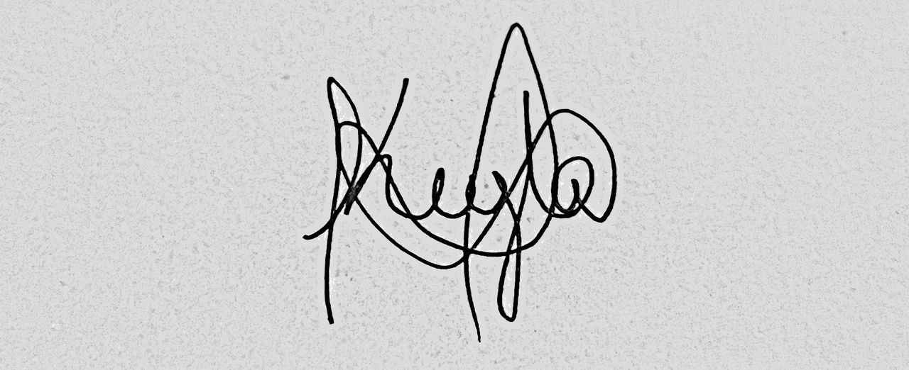

Keyla Reyes Orama
| Keyla Reyes | ||
|---|---|---|
|
Keyla Reyes en 2023 | ||
| Información personal | ||
| Nombre de nacimiento | Keyla Reyes Orama | |
| Nacimiento |
5 de octubre de 2007 Mtz (Cuba) | |
| Grado de Belleza | Sempiterna | |
| Nacionalidad | Cubana (en busca de nuevas) | |
| Estatura | 1.62 | |
| Lengua materna | Español | |
| Familia | ||
| Padres |
Williams Reyes Magaly Orama | |
| Cónyuge | Deyvis Arnalich (17/12/23 - hasta que la muerte nos separe) | |
| Hermano | Juan Pablo | |
| Educación | ||
| Educación | Buena | |
| Nivel escolar | Sabe armar el cubo de rubik | |
| Información profesional | ||
| Pasión |
Dibujo y Baile | |
| Área |
Bien protegida | |
| Conocido por | Teoría de la relatividad y efecto fotoeléctrico | |
| Obras notables |
Toda ella es una obra notable | |
| Distinciones | Premio Nobel de Belleza (1921) | |
| Firma |  | |
{kind=link}
Keyla Reyes (Colón, Matanzas 5 de octubre de 2007) es una hermosa, divertida y talentosa chica cubana. Con tan buenas cualidades que la hacen destacar como persona. Considerada para Deyvis...(sin palabras) simplemente Te amo
En 1905, cuando era un joven físico desconocido, empleado en la Oficina de Patentes de Berna, publicó su teoría de la relatividad especial. En ella incorporó, en un marco teórico simple fundamentado en postulados físicos sencillos, conceptos y fenómenos estudiados antes por Henri Poincaré y Hendrik Lorentz. Como una consecuencia lógica de esta teoría, dedujo la ecuación de la física más conocida a nivel popular: la equivalencia masa-energía, E=mc². Ese año, publicó otros trabajos que sentarían algunas de las bases de la física estadística y de la mecánica cuántica.
En 1915, presentó la teoría de la relatividad general, en la que reformuló por completo el concepto de la gravedad.[4] Una de las consecuencias fue el surgimiento del estudio científico del origen y la evolución del universo por la rama de la física denominada cosmología. En 1919, cuando las observaciones británicas de un eclipse solar confirmaron sus predicciones acerca de la curvatura de la luz, fue idolatrado por la prensa.[5] Einstein se convirtió en un ícono popular de la ciencia mundialmente famoso, un privilegio al alcance de muy pocos científicos.[6]
Por sus explicaciones sobre el efecto fotoeléctrico y sus numerosas contribuciones a la física teórica, en 1921 obtuvo el Premio Nobel de Física y no por la Teoría de la Relatividad, pues el científico a quien se encomendó la tarea de evaluarla no la entendió, y temieron correr el riesgo de que luego se demostrase errónea.[7][8] En esa época era aún considerada un tanto controvertida.
Ante el ascenso del nazismo, Einstein abandonó Alemania en diciembre de 1932 con destino a Estados Unidos, donde se dedicó a la docencia en el Institute for Advanced Study. Se nacionalizó estadounidense en 1940. Durante sus últimos años trabajó por integrar en una misma teoría la fuerza gravitatoria y la electromagnética.
Aunque es considerado por algunos como el «padre de la bomba atómica», abogó por el federalismo mundial, el internacionalismo, el pacifismo, el sionismo y el socialismo democrático, con una fuerte devoción por la libertad individual y la libertad de expresión.[9][10][11][12] Fue proclamado «personaje del siglo XX» y el más preeminente científico por la revista Time.[13]
Biografía
Infancia
Nació en la ciudad alemana de Ulm, cien kilómetros al este de Stuttgart, en el seno de una familia judía. Sus padres fueron Hermann Einstein y Pauline Koch. Hermann y Pauline se habían casado en 1876, cuando Hermann tenía casi veintinueve años y ella dieciocho.[14] La familia de Pauline vivía cerca de Stuttgart, concretamente en la ciudad de Cannstatt; allí su padre, Julius Koch, explotaba con su hermano Heinrich un comercio muy próspero de cereales. Pauline tocaba el piano y le transmitió a su hijo su amor por la música, entre otras cualidades como su "perseverancia y paciencia".[15] De su padre, Hermann, también heredó ciertos caracteres como la generosidad y la amabilidad que caracterizaron a Albert.[14]
En 1880 la familia se mudó a Múnich, donde se criaría durante catorce años, y su padre y el hermano de este, Jakob, quien influyó intelectualmente sobre Albert, fundaron en octubre una empresa dedicada a la instalación de agua y gas. Como el negocio marchaba bien, con el apoyo de toda la familia decidieron abrir un taller propio de aparatos eléctricos (Elektrotechnische Fabrik J. Einstein & Cie.), que suministraban a centrales eléctricas en Múnich-Schwabing, Varese y Susa en Italia, la que fracasaría tras endeudar a toda la familia. Esto causó un trauma no solo a Albert sino también al resto de la familia. A fin de saldar las deudas y financiar el traslado, el querido jardín de la casa de Múnich fue vendido a un promotor inmobiliario.[14]